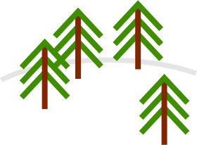

Sed ut perspiciatis unde omnis iste natus error sit voluptatem accusantium doloremque laudantium
During one week of skiing and snowboarding
Of course the wild natural environment encircling Sulden has barely changed, and it’s remained a destination for those wanting to lose and seclude themselves. This is where Winston Churchill came to rest between the two world wars, where composer Richard Strauss visited, and where German chancellor Angela Merkel has returned more than once. But, tellingly, Sulden is the birthplace of Reinhold Messner - one of the giants of modern mountaineering, and this is where he formed his school for alpinists, opened a museum, and even operates a yak farm!
So, starting from Sulden, we too went on a wilderness discovery adventure, heading toward the peak of Ortler, in the hope of stumbling upon those children riding wolves. We avoid the tracks and pistes, and stick to the untouched snow of the yet-to-be-discovered natural landscape.
Germknödl
Ramen Soup
 Pine Trees
Birch
Peaks of the Alps
Volcanoes of Hokkaido

Sauna
Onsen
Of course the wild natural environment encircling Sulden has barely changed, and it’s remained a destination for those wanting to lose and seclude themselves. This is where Winston Churchill came to rest between the two world wars, where composer Richard Strauss visited, and where German chancellor Angela Merkel has returned more than once. But, tellingly, Sulden is the birthplace of Reinhold Messner - one of the giants of modern mountaineering, and this is where he formed his school for alpinists, opened a museum, and even operates a yak farm!
So, starting from Sulden, we too went on a wilderness discovery adventure, heading toward the peak of Ortler, in the hope of stumbling upon those children riding wolves. We avoid the tracks and pistes, and stick to the untouched snow of the yet-to-be-discovered natural landscape.